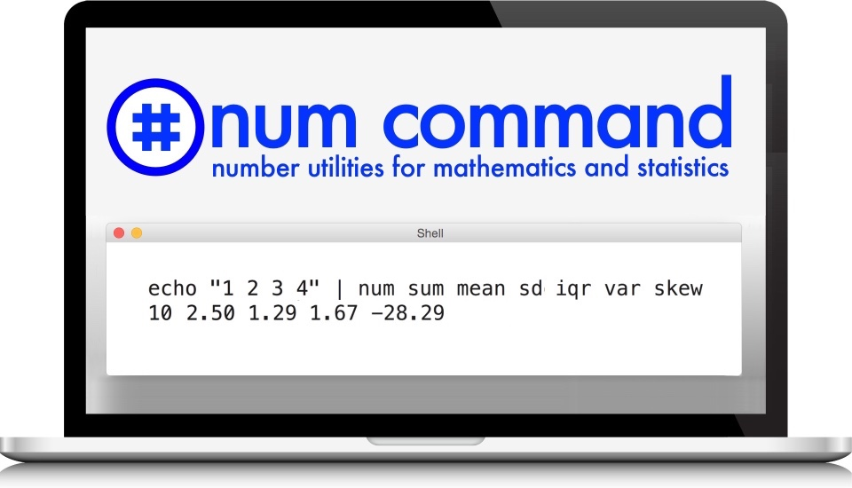

NumCommand.com •
Install •
Tutorial •
Functions •
Helpers •
Articles •
FAQ •
Donate

Num: number utilities for mathematics
Num is a command line tool for mathematics and statistics data processing.
Num on Patreon: donate to help Num on Twitter: @numcommand Num on the web: www.numcommand.com
Example:
$ num sum median variance stddev data.txt
10 2.5 1.66667 1.29099Dependencies
Install
$ git clone git@github.com:numcommand/num.git
$ cd num
$ bin/install.sh # for help => bin/install.sh --helpTroubleshooting page .
Start using Num:
Tutorial: quick start, input, output, variables, options, … Functions: sum, min, max, var, iqr, sort, round, normalize, … Helpers: awk, cut, sed, seq, wc, head, tail, parallel, … Articles & Blogs: Unix, EDA, Datamash, qstats, MOOCs, … FAQ: how to help, feature roadmap, …
Project pages:
Donate: using PayPal, Patreon, Bitcoin, GitHub, etc. Thanks: our coders, advisors, sponsors, donors, and helpers Comparisons: when to use Num vs. other tools, such as C, R, Python, etc. Benchmarks To do Known issues
Programmer pages:
Statistics help:
By Joel Parker Henderson